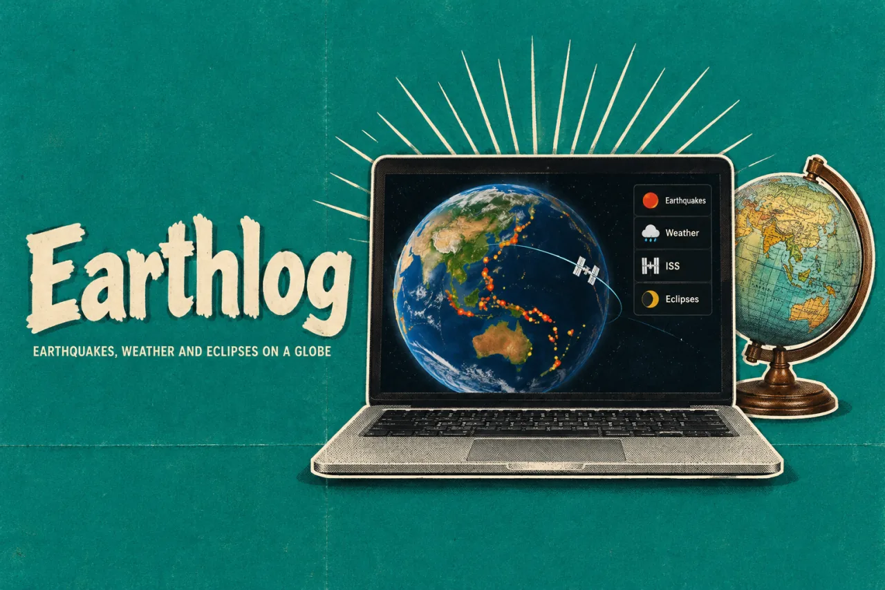
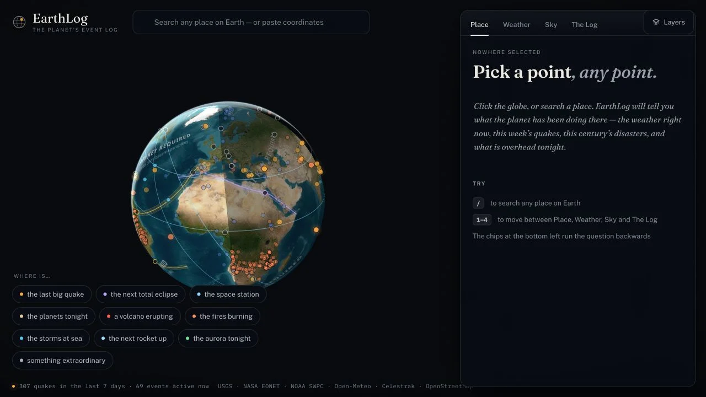

EarthlogProduct story · 4 min read
What is happening around this place?
Explore earthquakes, weather, and the night sky from one place on a globe.
Read the case study

The actual exploration surface: globe and event entry points on the left; place, weather, sky and history in the inspector.
View full size ↗01 The problem
What is happening here—and how current is the information?
A place can have recent earthquakes, old incident records, current weather, and predicted sky events. Bringing them onto one map makes exploration easier, but can also make very different information look equally current and reliable.
Designed for People exploring a place or following an event. Find local context and understand how current it is.
User context Design assumption
Following an event or asking what is happening near a location.
- The friction
- Different observations and forecasts can appear equally certain on a map.
- Design implication
- Keep timestamps, sources, and uncertainty beside the result.
Example situation · illustrative scenario. Imagine looking at a place on a globe and wanting more than a pin: the latest quake, tonight’s sky, or the weather around it. Those answers arrive from different sources with different levels of certainty.
02 The direction
Keep the date beside the answer
An incident can remain open after the last observation. A status label is not enough to explain whether something is happening now.
Based on the documented freshness rules and source labels.
My direction. I kept dates, sources, and model limits alongside the result, so visitors can judge the information while exploring.
Process and product scope
I framed two ways into exploration: start from a place, or follow an interesting event to its location. Both routes should arrive at a readable local picture, rather than another layer to decode.
Freshness and uncertainty are part of the information hierarchy. An observation, an older open record, and a forecast need different labels so the map does not make them look equally current or certain.
- 2
- directions of exploration
- Place-led
- event context
- Labelled
- models and estimates
- Choose
Start with a place or an interesting event.
- Explore
Read the local context across sources.
- Interpret
See when the information was observed and how it was derived.
03 Design decisions
Three choices behind the exploration
Open a decision to see the reasoning and trade-off.
01Start with a place or a question
People can search for a place, select the globe, or follow an event shortcut.
Why this matters. Someone may be curious about the latest earthquake without knowing where it happened.
The trade-off. Every route needs to lead back to the same place context.
02Show when the information was observed
The documented event model uses observation recency instead of treating every open incident as current.
Why this matters. A source’s administrative status can outlive the actual event. The label should communicate what is known.
The trade-off. Freshness rules remain approximations; source links and timestamps must stay visible.
03Explain the limits beside the result
Eclipse paths, station passes, and aurora layers carry model limitations in the documented product.
Why this matters. A compelling map should not appear more precise than the calculation behind it.
The trade-off. Caveats can overwhelm the visual story, so they belong beside the relevant result rather than only in documentation.
04 The outcome
One place to explore several kinds of information
I brought place search and event discovery together on the globe. A visitor can start with a location or an event, then inspect dates, sources and the relevant model limits. I kept that context close to the result rather than making the globe’s appearance carry the explanation.
More about the experience
- Enter through a place. Search and globe selection start from a location.
- Enter through an event. Event shortcuts reverse the route into the same place context.
- Read in context. The inspector separates place, weather, sky and history.
05 Reflection
Make the answer easy to find and easy to question.
I would ask someone to explain one result in their own words: what happened, when it was observed and where the information came from. Finding an event is only part of the task.
What I would evaluate next proposed work
- ask visitors to distinguish a recent observation from a modelled forecast and locate the source behind each result.
- correct interpretation of freshness and uncertainty, alongside success finding a relevant local event.
Learning chess on a different board.